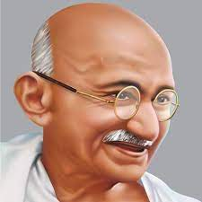

Vivekananda was a true patriot, Yogi and a saint combined into one. In the first place, he urged people to question. He spoke with a revolutionary spirit.
------------------------------------------------
Swami Vivekananda
Great Personality
Sardar Vallabhbhai Patel was a senior leader of the Indian National Congress and a prominent figure in the Indian Freedom Struggle, who later became India’s first Deputy Prime Minister and first Home Minister.
------------------------------------------------
Sardar Patel
Iron Man

Bapu is what traditional people in India call the beloved figure. Indeed, Gandhi in his signature robe and a walking stick became synonymous with the word "father" during the years of the freedom struggle, with the entire nation.
------------------------------------------------
Gandhiji
NAtional Father